从 12 页产品原型出发，契约冻结 → 逐卡实施 → 机器门禁验收，交付一座可运转的数据工厂： 采集接入 → Temporal 编排 → 多模态解析 → 质量门禁 → 知识治理 → 资产发布 全链路真实闭环， 并以幂等与故障注入验证其可靠性。
权威单源（PostgreSQL）+ 对象存证（MinIO 内容寻址）+ 工作流编排（Temporal）+ 图投影（Neo4j）+ 多模态引擎（macOS 原生框架）。跨存储无分布式事务，以同事务写入 + 水位线 + 对账保障一致性。
不是功能堆叠，而是数据平台最难的几件事：一致性、幂等、可靠性、可验收性。
CP-1 切片完整 / CP-2 事实审核态 / P0 三条件（manifest 回算 + 时间戳 + 水位线）同一事务提交；19 项发布反向场景实测零非法发布。
写键唯一约束、乐观锁、行锁、activity 5 元组、uq 回捞——13 类冲突全部 409 家族拒绝，非预期重复副作用为零。
容器停止 / DB 会话终止 / 存储下线 / 引擎断连 / 损坏输入——真实基础设施事件注入（非模拟日志），三阶段取证（前/注/恢）。
数据库触发器强制只追加，超级用户 DELETE 亦拒；敏感操作（审批/决策/发布/作废/投影）逐操作留痕，trace_id 全链贯穿。
三角色 RBAC + 对象生命周期门（presign 仅 ACTIVE）；13 族越权场景全拒 403/401，错误体零敏感信息泄露，DSR 开关保持关闭。
43 张任务卡、每卡冻结任务书→红步全录→官方净周期绿档→机器门禁 check G1–G18 收敛后才翻卡——工程过程本身可审计。
这是产品的设计基准：12 页原型先行冻结，工程实现按原型逐页对照交付。页面里的数据为设计演示数据， 交互（抽屉 / 筛选 / 图表 / 状态流转）可真实点击——用于感受产品设计意图。
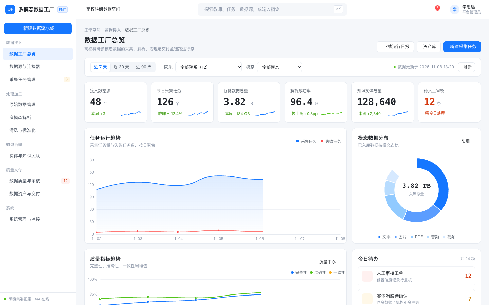
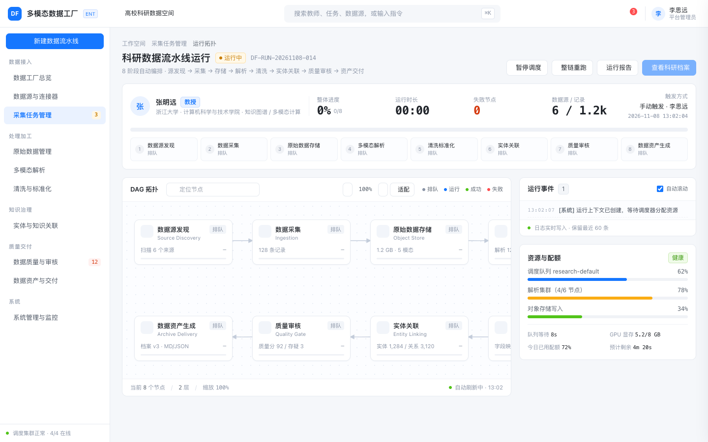
以下为运行中系统的实测截图（登录态、真实接口数据），非设计稿。每页均与 12 页产品原型逐页对照核验。
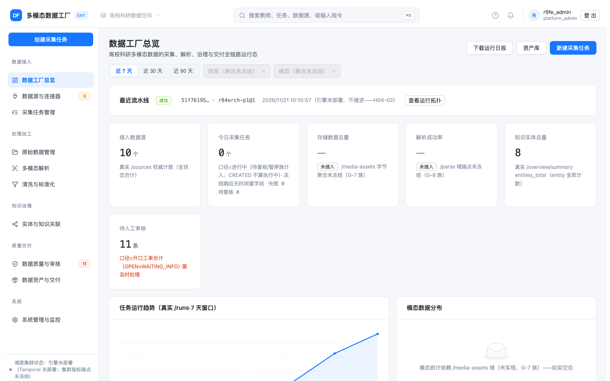
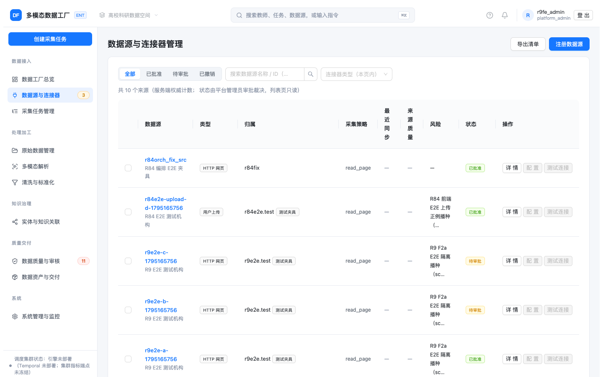
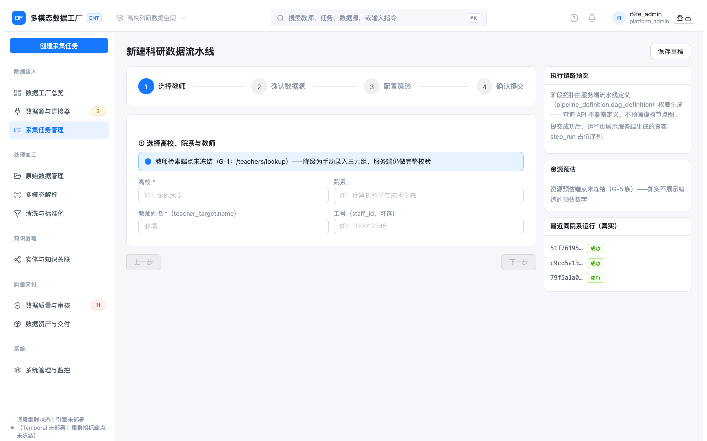
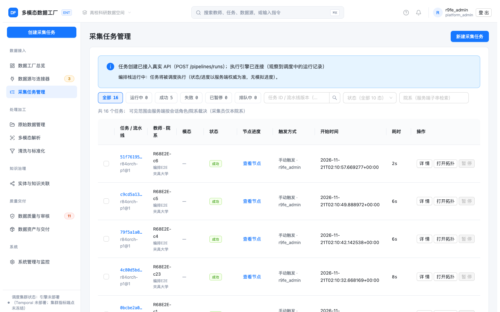
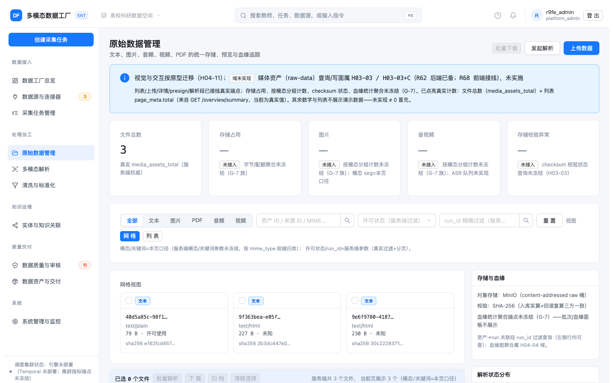
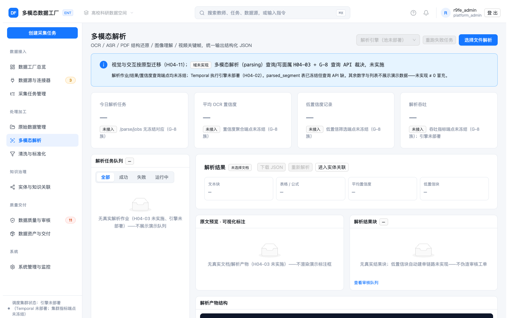
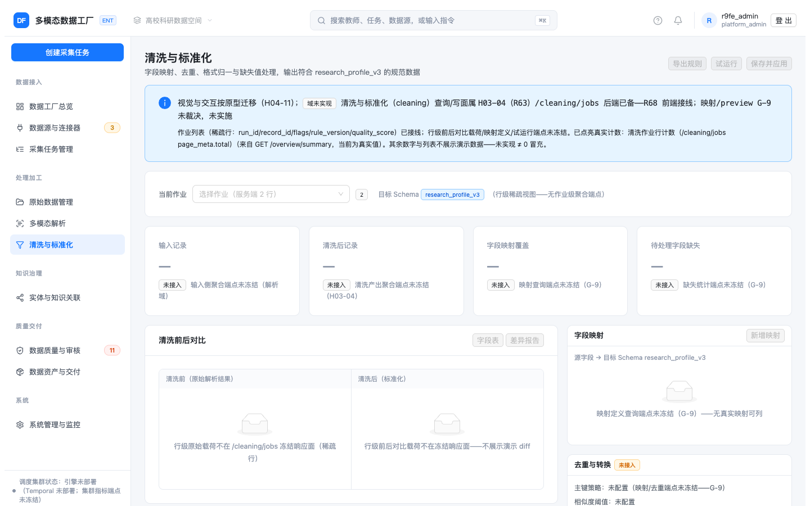
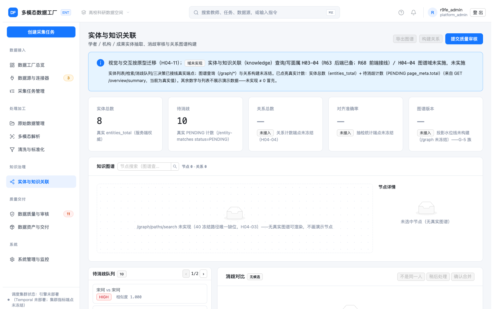
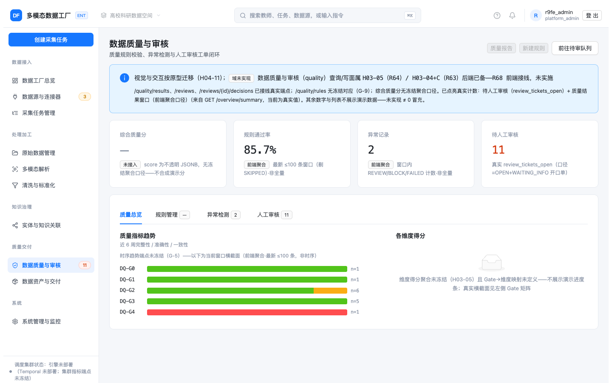
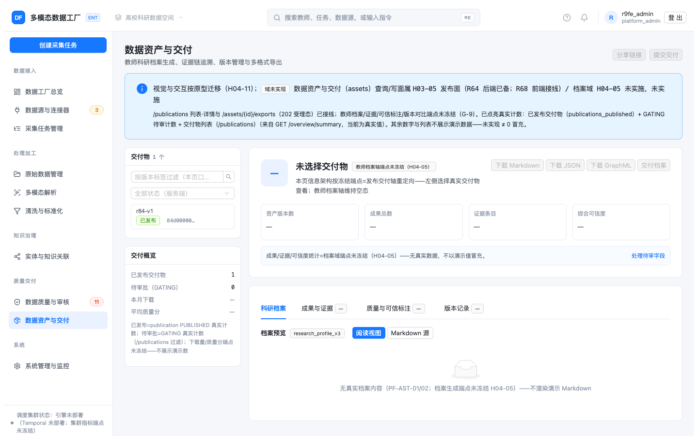
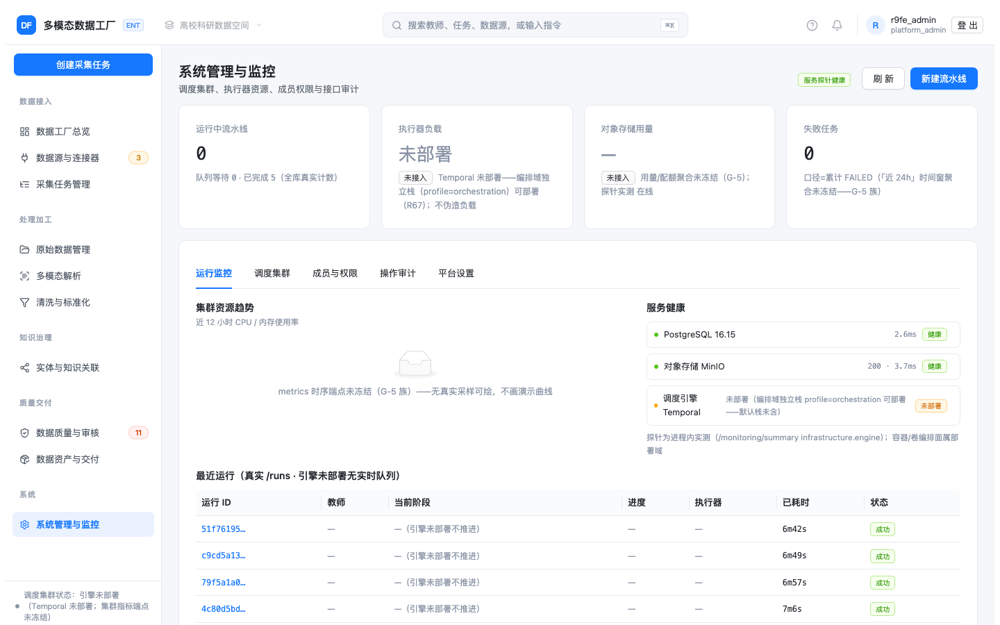
12 页产品原型是最终产品基准：页面结构、布局、功能入口、交互、业务语义逐页对照；未实现的能力如实标注「未接入」，不以演示数字冒充真值。
全部 12 页 ×（原型 / 实现）24 张对照截图随项目归档，可逐页复核。
录制中：三分钟动线——注册数据源 → 审批 → 建任务 → 暂停/恢复 → 质量门禁 → 资产发布与证据追溯。
Python 3.12 · FastAPI · SQLAlchemy 2 · Alembic 迁移链 · psycopg 3 · 自实现 S3 签名协议（零重型 SDK 依赖）
React 18 · TypeScript（tsc 严格模式）· Ant Design 5 · TanStack Query · Vite · Vitest 112 测试
PostgreSQL 16（权威单源 + 触发器审计）· MinIO（raw/gold 内容寻址）· Temporal（工作流编排）· Neo4j 5（图投影）
macOS 原生框架：Vision（OCR）/ Speech（ASR）/ AVFoundation（视频采样）——零模型下载，系统级推理
Playwright E2E（系统 Chrome）· unittest 专项族 · 机器门禁 check（G1–G18）· Docker 隔离净周期 · 证据链归档
冻结契约 16 份（schema/openapi 双指纹）· CR 治理台账 · 发布 Manifest（sha256 校验 exit 0）· Runbook 冷启动可复现
43 张任务卡、77 轮迭代、每一轮都留机器可复核的证据链——这套流程本身就是作品的一部分。
Schema/OpenAPI 先冻结、双指纹钉版；任何变更走 CR 台账审批，绝不静默改契约。
43 张卡依赖成 DAG；每卡冻结任务书（范围/白名单/验收判据），边界不含糊。
红步全录：首次失败原样留档，根因分类（断言/环境/产品/第三方），不删不改。
Docker 独立净周期：每轮从零起栈跑全量回归，历史 11 族专项套件全绿才继续。
每轮 G1–G18 机器 check 收敛（VERIFIED=1）才允许翻卡；人工 Gate 独立留档。
定向暂存白名单、单 commit 收官；主库零污染、历史证据零覆盖。